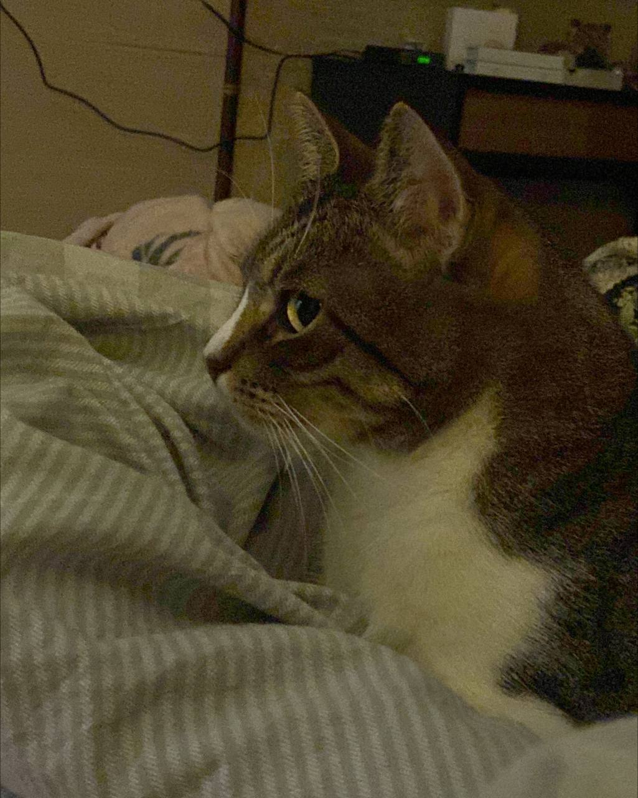
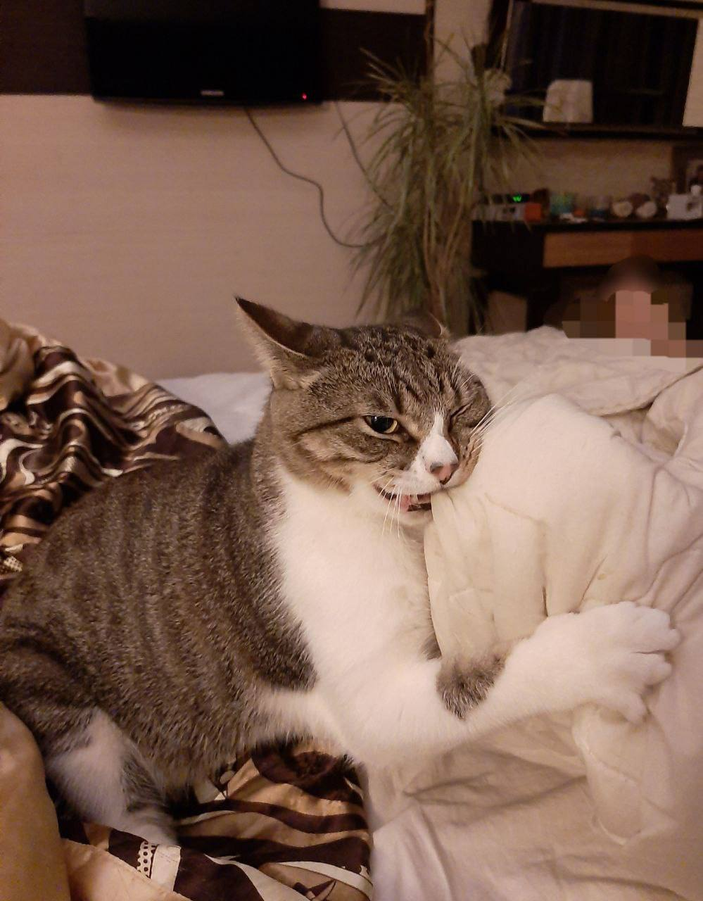
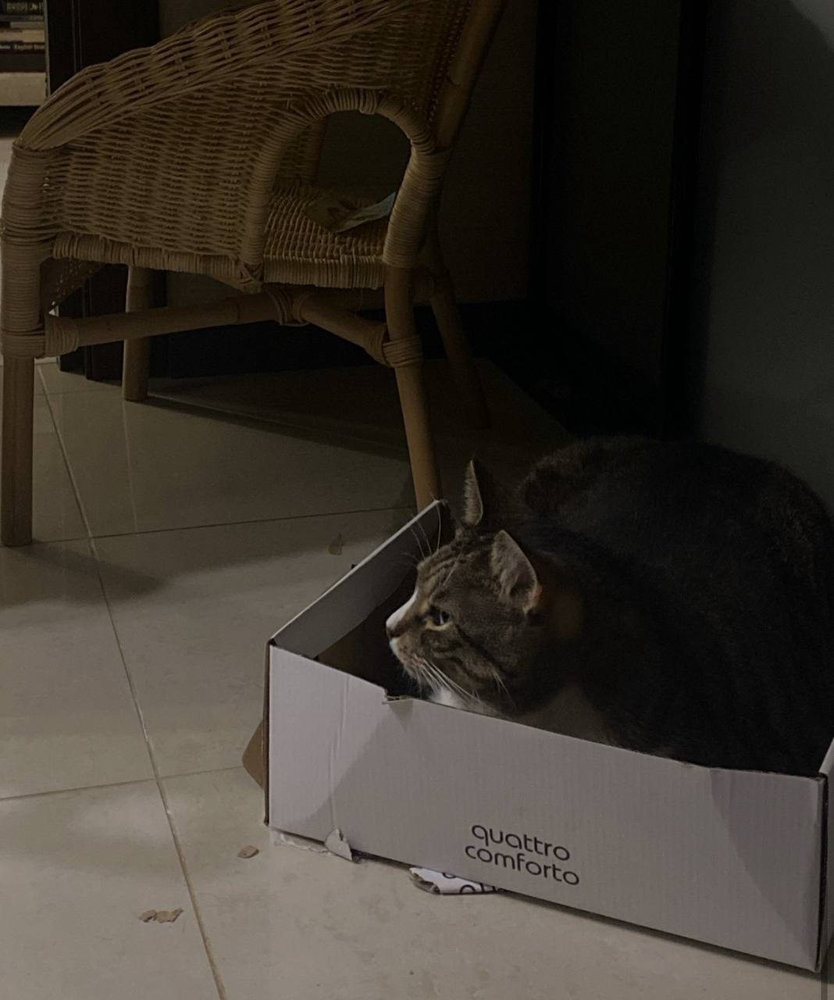
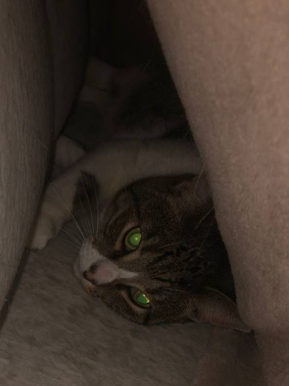
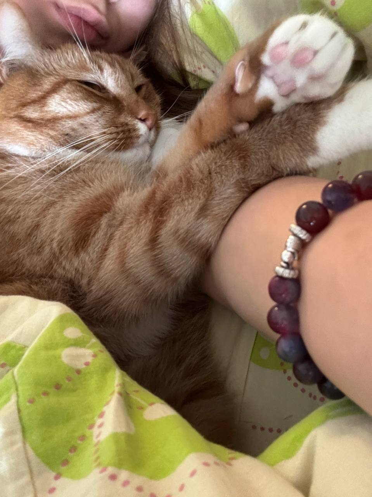
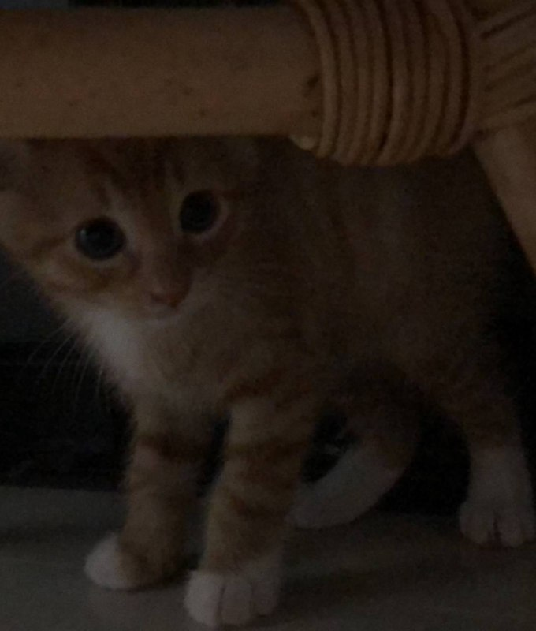
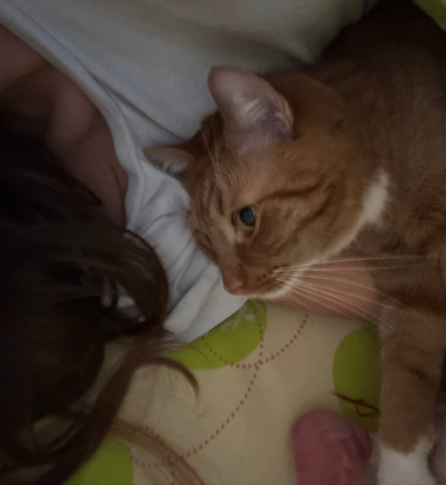
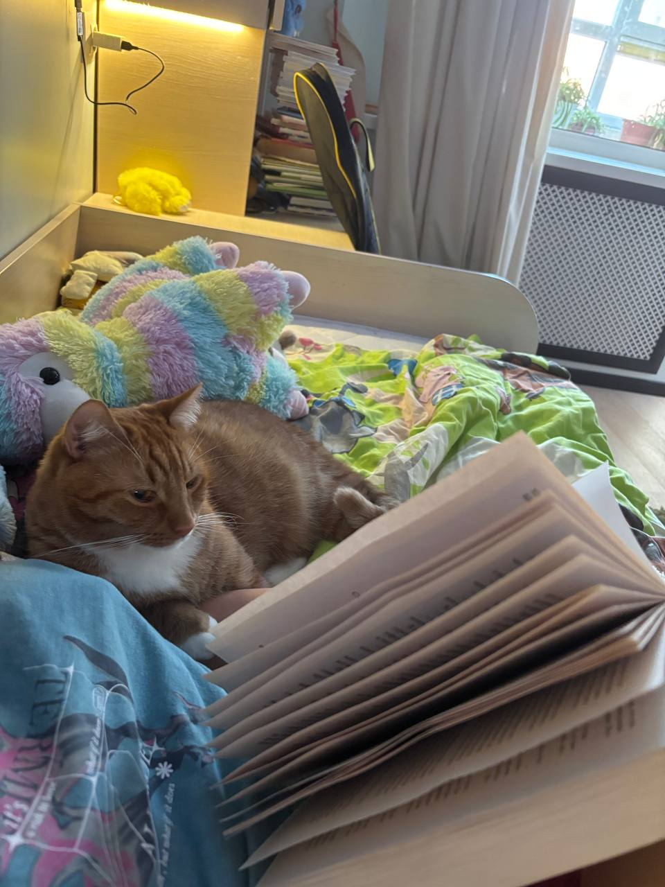

ЗАМИ




Возраст:6 лет
Порода:Метисс аббисинской кошки
Любимый член семьи: я
Факты:
- Замочка обладает интересной манерой поведения. Он любит ласку и всегда идет гладиться,
но вместе с этим он еще и очень любит кусаться,
поэтому гладить его много не стоит-может напасть.
- Он попал в дом моей семьи после того, как его сбила машина. Мама возила его в вет-клиники.
После лечения, даже не задумываясь, мы оставили его у себя.
- Котик обладает интересной привычкой: когда все засыпают, он беоет в зубы игрушечного воробья
и начинает ходить по дому, при этом мяукая
- Он попал в наш дом прямо в мой день рождения, когда мне исполнялось 9 лет, поэтому
я считаю этого зверька подарком судьбы.
К рыжику
РЫЖИК




Возраст:4 года
Порода:Рыжик
Любимый член семьи: мама
Факты:
- Рыжик очень ласковый и совсем не кусается, но довольно тревожный: с ним нужно прожить минимум
2 года, чтобы он привык к человеку.
- Когда мама гуляла, к ней подошла рыжая кошка с новорожденным котенком и оставила его. Мама взяла его
и отвезла домой. Мы стали выкармливать его самостоятельно, разводили молоко и кормили с бутылочки.
Изначально мы хотели его выкормить и отдать, но он уже привык к маме. Она решила его оставить.
- Рыжик обожает приходить в мою комнату и ложиться со мной, когда я сплю, читаю, смотрю фильм,
делаю уроки или просто отдыхаю. В такие моменты я люблю его фотографировать.
- С ним довольно безопасно играть, ведь он не выпускает коготки
К зами